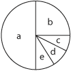

|
||||||||||||||||
|
THE
EFFECT OF VISUAL PERCEPTUAL DISTRACTORS
ON CHILDREN'S LOGICAL-MATHEMATICAL THINKING IN RATIONAL- NUMBER SITUATIONS* |
||||||||||||||||
|
Merlyn J. Behr** Thomas R. Post |
||||||||||||||||
|
During the past two years (1979-1981) the National Science Foundation has sponsored efforts at five University sites to develop, field test, and implement instructional and evaluation materials over a broad spectrum of rational number concepts. One question of primary concern to the Rational Number Project has been "What is the nature of the impact of manipulative materials on the learning of rational number concepts?" The paradigm used by the project's instructional component has been the teaching experiment. During the 1980-81 school year, 18-20 week teaching experiments were conducted with a) six Grade 4 children in DeKalb, Illinois, b) six Grade 4 children in St. Paul, Minnesota and c) five Grade 5 children in St. Paul, Minnesota. In addition, extensive evaluation materials were developed at Northwestern University under the direction of Richard Lesh and by Ed Silver and Diane Briars of San Diego State and Carnegie-Mellon Universities, respectively. Both the instructional and evaluation materials were utilized at all project sites. As a result a fairly substantial body of data has been collected and is currently undergoing analysis. Six major data strands
have emerged from the teaching experiments conducted in Illinois and Minnesota.
They are:
It is the purpose of this paper to define perceptual distractor and begin to define its role in children's understanding of rational number concepts. It is of particular interest to show how perceptual distractors influence children's thinking. It is hypothesized that perceptual distractors overwhelm logical thought processes and cause children to interpret problems and tasks in extraordinary ways. The particular emphasis in this report is to exhibit differences among children's dependence on visual-perceptual information, as compared to their ability to apply logical-mathematical thinking. It will also address the transition from dependence on visual information to logical-mathematical thinking. A series of tasks in which visual-perceptual distractors were deliberately introduced was developed. Emphasized in this report is information which indicates differences among children's ability to "put aside," "overcome," or "ignore" the distractors and deal with the tasks on a logical-mathematical level. The extent to which a child is able to do this-resolve conflicts between visual information and their logical-mathematical thinking - is viewed as one of several important indicators of how solid or tenuous is the child's understanding of the rational-number concept in question. Overview of the Tasks The term "visual-perceptual distractor" is used in this paper to refer to the introduction of information into a standard school-type rational-number task which is either consistent with the task, irrelevant to the task, or inconsistent with the task. A) Consistent cues are designed specifically to aid in the solution of a task or problem. B) Irrelevant cues contain extraneous but neutral information. Such cues require the solver to ignore certain information. C) Inconsistent cues are these which conflict with the conceptualization of the task or problem and therefore, must be reconciled prior to solution. This is normally accomplished by ignoral followed by reconstruction. This latter category has proven to be the most troublesome for students, perhaps because it involves a multi-faceted solution. An example will illustrate
these distinctions.
The normal order of task presentation involved first the task without the distractor, followed by the same problem with the distractor present. Sometimes the task was physically transformed from a consistent to an inconsistent situation while the subject observed. Such transformation often caused the child to provide not only a different response but also a different rationale when explaining her procedure, a phenomenon reminiscent of pre-operational children's responses to Piaget's conservation tasks. The theory-based instructional materials developed for the teaching experiment provided a very rich instructional environment which relied heavily on the systematic use of manipulative aids. Manipulative aids used in the instructional program included continuous embodiments for rational number such as cut-out fractional parts, paper folding, and centimeter rods; discrete embodiments, such as chips; and various number lines. The instruction emphasized the part-whole and measure subconstructs of rational number. Concepts taught included the basic fraction concept, order and equivalence relations, addition and subtraction of like fractions and multiplication. Instruction dealt with fractions less than, equal to, and greater than one, as well as mixed numbers. Continuous Embodiment
Tasks  Of interest was whether the child could ignore the partition lines in cde in order to consider it one-fourth and imagine partition lines placed in b to consider it as three-twelfths. The was one of several contexts in which we found the existence of sub partitioning lines to be a distractor to children's logical-mathematical understanding of rational-number concepts. Several of our interviews suggest that for some children a part (or group of parts) can only have one fractional name at a time. Part b is either 1/4; or 3/12 but cannot be both at the same time. The same is true for cde. While the part cannot have two names at the same time, the subject does exhibit flexibility in terms of the part being either 1/4; or 3/12 at any given time. This contrasts with a lower level response where a part has one and only one fractional name at all times. For example, one child Mk, was not able to give two names for b; according to his thinking it could be 1/4; or 3/12 but not both. This same child was unable to see that another name for cde was 1/4;; it was only 3/12. Results suggest a linear trend in the development of this aspect of fraction identity. A first level of understanding consists of b and cde having each a single label (1/4 and 3/12, respectively). Level two consists of b having two labels (1/4 and 3/12), but not simultaneously, while cde still has only one label. Level three would indicate that both b and cde can have two labels (1/4 or 3/12) but not simultaneously. And level four consists of both b and cde, each having two labels (1/4 and 3/12) simultaneously. Discrete Embodiment
Tasks Task 1 involved an initial presentation of six paper clips arranged as ||| ||| and transformed to || || ||; task 2 involved initial presentation of ten paper clips arranged as ||||| ||||| and transformed to ||| |||| |||. For each part of tasks 1 and 2 the subject was asked to produce a set of paper clips equal in number to 3-halves the number of clips in the stimulus set. Task 3 involved a set of twelve paper clips; for the initial presentation they were arranged as |||| |||| |||| and transformed to |||||| ||||||. The problem for the subject in each case in task 3 was to present a set of clips equal in number to 5-thirds the number of clips in the stimulus set. As might be suspected, the second part of every task proved to be much more difficult for students, since the transformation diverted the attention of the solver from the basic concept intended by the problem presenter. Of special note is the fact that after providing an acceptable explanation to a correct solution to the first part of each task some students completely abandoned these "logical" structures and adopted other faculty ones which reflected the physical situation. For example in task #1 one student correctly suggested the 3/2 of ||| ||| was ||| ||| |||, while providing an appropriate explanation. She then concluded that 3/2 of || || || was the same set(i.e., || || ||) because "you already have 3 groups of 2." Another child took one set of 2 away from || || || reasoning that "we already have 3/2's" This child apparently reinterpreted the task to be one of reconstructing the unit. In this case the perceptual distractor not only altered the quality of the child's thought process but also caused him to alter the perceived task so as to more closely correspond with the physical setting. Number Line
Tasks Other types of distractors also seem to be emerging as we continue to examine our pool of data. These include: language, numerical distractors, and sequencing conditions resulting in an Einstellung or mental set. These and related issues will be discussed more fully in "Rational Number Concepts." A chapter to appear in Acquisition of Mathematics Concepts and Processes, Lesh and Landau (Eds.), Academic Press, 1982. Meaningful understanding of mathematical ideas and the mathematical symbolism for these ideas depends in part on an ability to demonstrate interactively the association between the symbolic and manipulative-aid modes of representation. Theoretically, as children deal with mathematical ideas, embodied by manipulative aids, the mathematical ideas are abstracted into logical-mathematical structures. As children's logical-mathematical structures expand, it is presumed that their dependence upon the concrete manipulative aids decreases; ultimately, logical-mathematical thought becomes sufficiently strong so that it dominates the visual-perceptual information. The extent to which children's thinking is dominated by visual-perceptual information therefore, seems to be an indication of the relative strength of their logical-mathematical thinking. The extent to which children can resolve conflicts between visual information and logical-mathematical thought processes might at first be viewed as a simple indicator of how firmly a child has internalized that the ability to resolve such conflicts is differentially related to field-dependent and field-independent learners. By definition the field-dependent child is unable to (or has great difficulty) ignoring or overcoming irrelevant environmental stimuli accompanying problem conditions. Witkin (1977) states that;
Similarly Goodenough (1976) suggests that:
It is indeed tempting to discuss the issue of perceptual distractors within the framework of field-dependence theory. It seems clear that the abandonment of previously internalized cognitive structures in the presence of visual stimuli inconsistent with problem conditions and/or requirements is quite similar to the individual who is"…dominated by the most salient cues in the concept attainment problems." (ibid) It may be then that the effect of perceptual distractors on student learning is a function of where the individual appears on the field-independence-field-dependence continuum. The linkages suggested also imply that the issue of such distractors transcends the learning of rational number concepts per se and is relevant to a much broader spectrum of concepts. Our data suggests just such a differential impact. Some students were obviously more "bothered" by the visual miscues presented in the problem tasks. It was nevertheless possible in all cases to teach children to overcome the impact of these distractors in specific situations. It should be noted however, that there was a strong tendency for the (some) children to again be influenced when the distractors were presented in a different context (e.g., continuous and then discrete). Implications Although performance with rational numbers is affected by the presence of distractors, children can be taught to overcome their influence. It is expected that strategies generated by children to overcome these distractors will result in more stable rational-number concepts. Our research has raised important questions about the role of such distractors in the learning process. Issues of sequencing, interactions with learning style and ability level, as well as questions related to appropriate procedures for overcoming their influence will need to be addressed. PROJECT RELATED REFERENCES Behr, Merlyn J., Post, Thomas R., Silver, Edward A., & Mierkiewicz, Diane B. Theoretical Foundations for Instructional Research on Rational Number. Proceedings of the Fourth International Conference for the Psychology of Mathematics Education, Berkeley, California, August 16-17, 1980, pp. 60-67 Lesh, Richard, Landau, Marsha, & Hamilton, Eric. Rational Number Ideas and the Role of Representational Systems. Proceedings of the Fourth International Conference for the Psychology of Mathematics Education. Berkeley, California, August 16-17, 1980, pp. 50-59 Behr, Merlyn, J., Lesh, Richard, & Post, Thomas. Rational Number Ideas and the Role of Representational Systems. Paper presented at the 1981 Annual Meeting of the American Educational Research Association, Los Angeles, California, April 1981. Behr, Merlyn J., & Post, Thomas R. The Role of Manipulative Aids in Learning Rational Number Concepts. Paper presented at the 1981 Annual Meeting of the American Educational Research Association, Los Angeles, California, April 1981. Lesh, Richard & Hamilton, Eric, The Rational Number Project Testing Program. Paper presented at the American Educational Research Association Annual Meeting, Los Angeles, California, April 13-14, 1981. Behr, Merlyn, J., Lesh, Richard & Post, Thomas R. Construct Analysis, Manipulative Aids, Representational Systems and Learning Rational Number Concepts. Proceedings of the Fifth Conference of the International Group for the Psychology of Mathematics Education. Grenoble, France, July 13-18, 1981. Behr, Merlyn J., Lesh, Richard, & Post, Thomas R. The Role of Manipulative Aids in Learning Rational Numbers. Poster Session PME, Berkeley, California 1981. OTHER REFERENCES Witkin, H.A., et. Al. Field-Dependent and Field-Independent Cognitive Styles and Their Educational Implications. Review of Educational Research. Goodenough, D.R. The
Role of Individual Differences in Field-Dependence as a Factor in Learning
and Memory. Psychological Bulletin, 1976, 83(4), 675-676. *
The research was supported in part by the National Science Foundation
under grant number SED 79-20591. Any opinions, findings, and conclusions
expressed are those of the authors and do not necessarily reflect the
views of the National Science Foundation. (top) |
||||||||||||||||